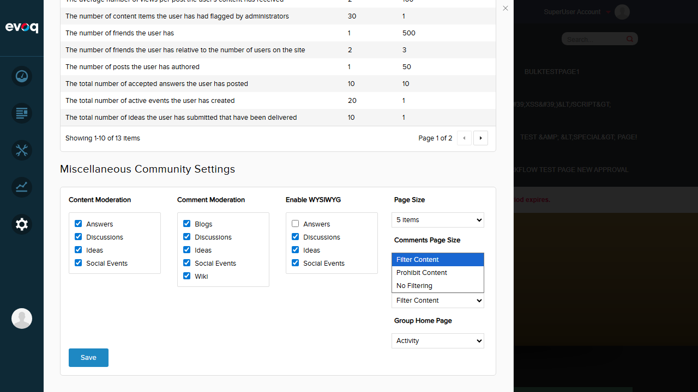
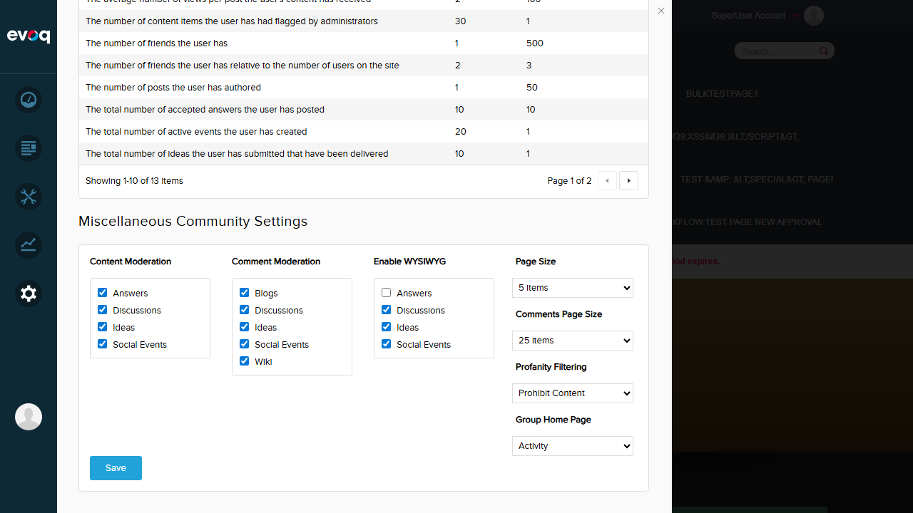

Configure profanity handling across all modules with options to filter content, prohibit content, or allow all content.
UI Location
Admin > Settings > Community Settings > Settings tab
Priority
High
Test Date
January 6, 2026
Test Results Summary
4
PASSED
2
FAILED
Test Scenarios
Test 1: Profanity Filter UI Availability
PASS
Objective: Verify the Profanity Filter dropdown is visible and accessible in Community Settings.
Steps Taken:
Logged in as SuperUser (host)
Navigated to Settings > Community
Located the "Profanity Filtering" section in Miscellaneous Community Settings
Verified dropdown displays all three options
Result: The Profanity Filtering dropdown is visible and shows three options: Filter Content, Prohibit Content, and No Filtering.

Test 2: Set Profanity Filter to 'Filter Content' (Mask Profanity)
PASS
Objective: Test selecting and saving the "Filter Content" option which masks profanity.
Steps Taken:
Selected "Filter Content" from the Profanity Filtering dropdown
Clicked the Save button
Verified success notification appeared
Result: "Filter Content" option was selected successfully and saved. Success message "Item successfully saved" appeared.
Test 3: Set Profanity Filter to 'Prohibit Content' (Block Submission)
PASS
Objective: Test selecting and saving the "Prohibit Content" option which blocks submissions containing profanity.
Steps Taken:
Selected "Prohibit Content" from the Profanity Filtering dropdown
Clicked the Save button
Verified success notification appeared
Result: "Prohibit Content" option was selected successfully and saved. Success message appeared confirming the save.

Test 4: Set Profanity Filter to 'No Filtering' (Allow All)
PASS
Objective: Test selecting and saving the "No Filtering" option which allows all content.
Steps Taken:
Selected "No Filtering" from the Profanity Filtering dropdown
Clicked the Save button
Verified success notification appeared
Result: "No Filtering" option was selected successfully and saved. Success message appeared confirming the save.
Test 5: Verify Setting Persistence After Page Refresh
FAIL
Objective: Verify that the saved Profanity Filter setting persists after page refresh.
Steps Taken:
Set Profanity Filter to "No Filtering"
Saved the setting (success message appeared)
Refreshed the page by navigating away and back
Re-opened Community Settings
Checked the Profanity Filtering dropdown value
Issue Found: After saving "No Filtering" and refreshing the page, the Profanity Filter reverted to "Filter Content" instead of retaining the saved "No Filtering" value. The setting does NOT persist correctly.
Expected: Dropdown should show "No Filtering" (the last saved value)
Actual: Dropdown shows "Filter Content"
Test 6: Verify Default Value (Expected: No Filtering)
FAIL
Objective: Verify the default value is "No Filtering" (value 2) as specified in the feature documentation.
Steps Taken:
Observed the current Profanity Filter value after page load
Compared to expected default value
Issue Found: The documentation states the default value should be "No Filtering" (value 2) for new installations. However, the observed value after loading is "Filter Content" (value 0). This could indicate either:
The default value in the database is not set correctly
The persistence mechanism is not working, causing fallback to index 0
The feature specification differs from the implementation
Expected: "No Filtering" (as documented default for new installations)
Actual: "Filter Content" is shown
Observations
Additional Notes
Save Operation: The save operation appears to work correctly at the UI level - a success notification is displayed. However, the settings do not persist to the database or are not retrieved correctly on subsequent page loads.
Profanity Handling Test: Testing actual profanity filtering behavior (masking profanity, blocking submissions) would require posting content containing profanity through community modules (Discussions, Ideas, etc.). This was not tested as it requires additional setup and test data.
Code Reference: The relevant code in CommunitySettings.js shows profanityFilter is handled as a knockout observable with a default value of 0. The SaveSettings function sends ProfanityFilter as part of the settings params. The persistence issue may be in the server-side SaveCmxSettings method or the GetSettings retrieval logic.
Group Home Page: It was also observed that the Group Home Page setting showed "Wiki" selected after page load, suggesting there may be similar persistence issues with other settings, or there may be a caching mechanism affecting the displayed values.
GET /API/PersonaBar/CommunitySettings/GetSettings - Retrieves all community settings including ProfanityFilter
POST /API/PersonaBar/CommunitySettings/SaveSettings - Saves all community settings
Profanity Filter Values
Value
Option
Behavior
0
Filter Content
Masks profanity in content
1
Prohibit Content
Blocks submission of content containing profanity
2
No Filtering
Allows all content without filtering
Recommendations
Investigate Persistence Issue: Debug the SaveCmxSettings and GetCmxSettings methods to determine why the Profanity Filter setting is not persisting correctly.
Verify Database State: Check the database table storing these settings to confirm if the value is being written correctly.
Test Profanity Behavior: Once the persistence issue is resolved, perform end-to-end testing with actual profanity words to verify each mode works as expected.
Clarify Default Value: Confirm whether the intended default is "No Filtering" (value 2) as documented, or "Filter Content" (value 0) as observed.